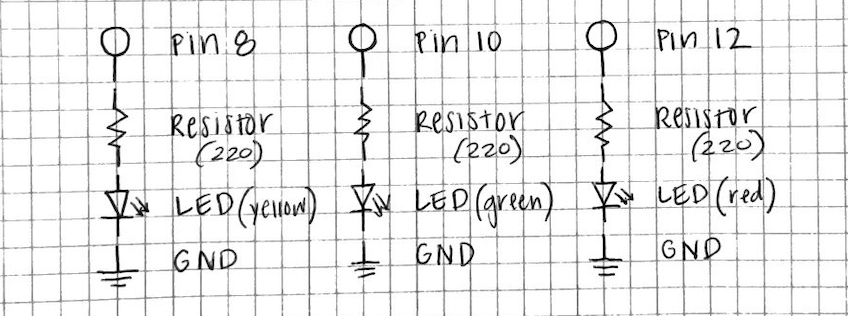
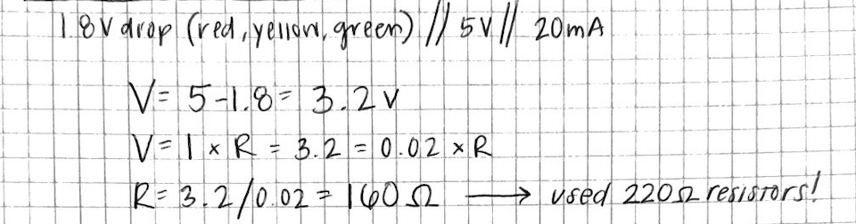
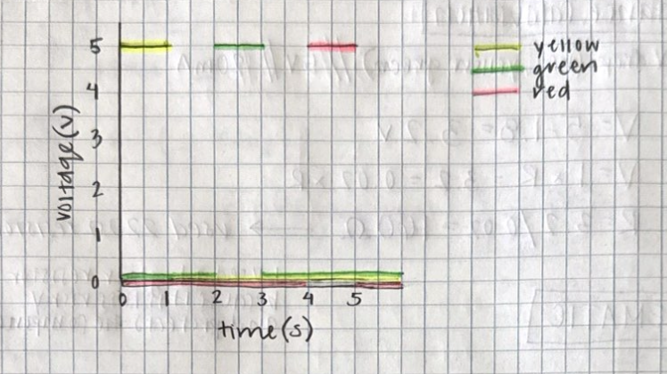

My Schematic
 Image of my schematic with labeled components, including pins, resistors, LEDs, and ground.Resistance Calculation
 Image of my calculation for the resistance needed for my circuit, which is 160 ohms. I used 220 ohm resistors, which is the closest standard resistor with a value over 160 ohms.My Circuit
 Image of my physical circuit, "Blink", with all components connected.
Image of my physical circuit, "Blink", with all components connected.
My Firmware
/*
Blink
Turns an LED on for one second, then off for one second, repeatedly.
Most Arduinos have an on-board LED you can control. On the UNO, MEGA and ZERO
it is attached to digital pin 13, on MKR1000 on pin 6. LED_BUILTIN is set to
the correct LED pin independent of which board is used.
If you want to know what pin the on-board LED is connected to on your Arduino
model, check the Technical Specs of your board at:
https://docs.arduino.cc/hardware/
modified 8 May 2014
by Scott Fitzgerald
modified 2 Sep 2016
by Arturo Guadalupi
modified 8 Sep 2016
by Colby Newman
This example code is in the public domain.
https://docs.arduino.cc/built-in-examples/basics/Blink/
*/
int yellow = 8; // variable and pin number for yellow LED
int green = 10; // variable and pin number for green LED
int red = 12; // variable and pin number for red LED
// the setup function runs once when you press reset or power the board
void setup() {
// initialize digital pin LED_BUILTIN as an output.
pinMode(yellow, OUTPUT);
pinMode(green, OUTPUT);
pinMode(red, OUTPUT);
}
// the loop function runs over and over again forever
void loop() {
digitalWrite(yellow, HIGH); // turn the yellow LED on (HIGH is the voltage level)
delay(1000); // wait for a second
digitalWrite(yellow, LOW); // turn the yellow LED off by making the voltage LOW
delay(1000); // wait for a second
digitalWrite(green, HIGH); // turn the green LED on (HIGH is the voltage level)
delay(1000); // wait for a second
digitalWrite(green, LOW); // turn the green LED off by making the voltage LOW
delay(1000); // wait for a second
digitalWrite(red, HIGH); // turn the red LED on (HIGH is the voltage level)
delay(1000); // wait for a second
digitalWrite(red, LOW); // turn the red LED off by making the voltage LOW
delay(1000); // wait for a second
}
My Circuit's Operation
Video of my circuit in operation, with all three LEDs blinking- yellow, green, and red.Additional Questions
1: Draw a graph where the X axis is time and the Y axis is voltage across the LEDs.
Draw a line for each of your 3 LEDs.
Voltage (V) vs Time (s)

2: How many LEDs could you blink independently with your Arduino?
How much current would that draw?
According to the data sheet for Arduino Uno, each I/O pin can safely provide a maximum of 20mA;
however, the total combined current for all 14 I/O pins should not exceed 200mA.
This means that you could blink 10 LEDs across 10 pins with your Arduino,
drawing that maximum 200mA, but not exceeding it.
4: How fast do you need to blink your LEDs until you no longer can tell that they are blinking?
After testing the LEDs blink speed with my Arduino,
I found that you can no longer tell that they are blinking when set to 0.012 seconds, or 12 milliseconds.
5: Did you use AI tools in completing this assignment?
If yes, please provide details on how/when, as well as a brief reflection.
If no, you can either leave this question blank, or provide other information if you'd like.
I used ChatGPT to figure out how to put in a code block and debug my code in order to put the video of my circuit and LEDs blinking into html.
I’ve never put a code snippet or a video into an html before, and although VS Code gives automatic suggestions,
it wasn’t quite working. After it instructed me to use a code block and ensure my file type was correct for the video,
I used w3schools to help structure and finish my code.
It was definitely helpful to find the bug, which was mp4 versus quicktime,
because I am not the most well versed coder or tech savvy person,
and didn’t even know there were different types of videos.
As for the code block, I was able to eliminate a lot of "br" tags in my code.
The AI tools really just pointed me in the right direction before I continued researching on my own.